Animation in Blend
Introduction
Working with animations
With XAML files it's very easy to add animation to any visual element on the screen. Using a tool like Blend eases this process even more. What follows next is a brief introduction to the animation system in Noesis Engine using Blend.
More information about animations in NoesisGUI can be found in the animation tutorial
The storyboard
All the animations created from Blend are based on a timeline called Storyboard. Inside a Storyboard, animation changes are inserted like in a music score, using groups of keyframes that affects a number of properties. The animation tells which property is going to be animated, and the keyframes inside the animation specify which values is going to take de property over the time.
Where to apply a sotryboard
Storyboards can be applied in 3 situations:
- As a response to a routed event (using an Event Trigger, both used directly over an object or inside a style or template)
- As a response to the activation or deactivation of a property (inside a style or a template)
- In a VisualState (inside a template)
A simple animation
Let's take a simple Rectangle to make some animations to it.
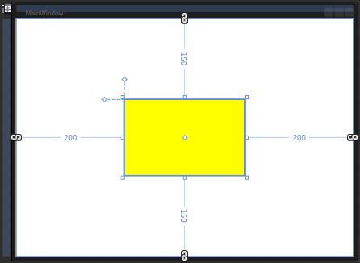After drawing the rectangle, go to the "Objects and Timeline" window, and click on the "New" button on the right to create a new Storyboard.
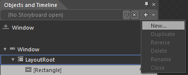Give a name to the Storyboard and create it.
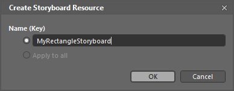Now in the "Objects and Timeline" window the newly created storyboard appears. Moving the time bar in the timeline sets the exact time when property changes will be executed during the animation
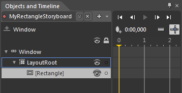When a new animation is created, Blend enters in the recording state automatically. What this means is that any change that you do in the design window or in the element properties are being recorded into the animation timeline, just in the time where the time bar is pointing (0 seconds at start).
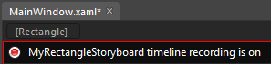Now we can start animating our rectangle. We are going to start changing the color of the background to red in 0 seconds, and then we want to start a progressive change to green until animation reaches 1 second. So we move the time bar to time 0 seconds, and change the background property to red value while the recording button is still active (in red). The change in the background property is registered in the timeline as a new keyframe in the position where the time bar is located in this exact moment.
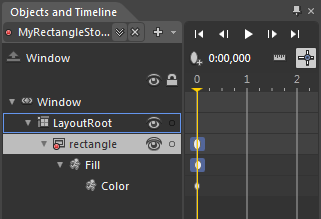To insert the green value we move the time bar to 1 second and change the color of the rectangle. Blend will represent this in the timeline as a continous line.
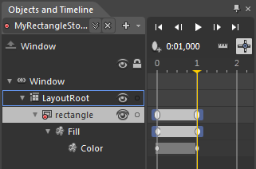Once a keyframe is inserted, the transition from the previous KeyFrame can be modified selecting the property value in the timeline window and modifying the KeySpline or EasingFunction.
With the KeySpline window the transition curve can be fine tuned to the user desires. In this example we create a transition that starts slowly to change, then in the middle of the transition it speeds up, and finally it ends slowly again reaching the next keyframe value.
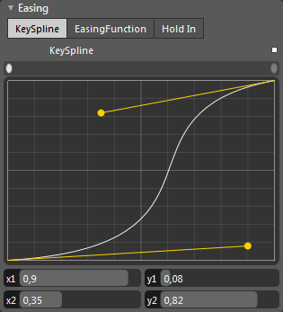With the EasingFunction window the user can choose between a number of predefined effects that affets the exit from the previous keyframe to the actual (Out), the entrance to the new keyframe value (In) or both.
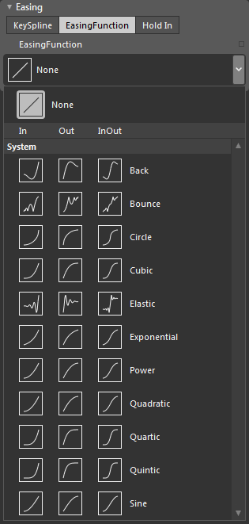Some of the predefined effects have additional values that can be tweaked by the user.
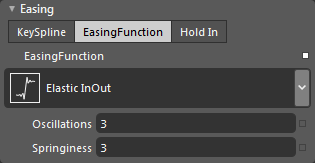We can also control the number of repetions that the animation is going to be executed. For this, we can right click over the animated property in the timeline.
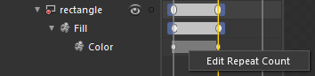And set the number of repetitions, or select "Forever" so the animation is playing countinously

Finally, we can assign the animation to a EventTrigger so it starts, for example, when the mouse enters the rectangle. We can use the Triggers panel for this.
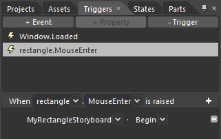Animations using VisualStates
The VisualStates system is a powerful mechanism to change and animate properties based on the internal state of objects. The states are hard-coded inside every control, and the template elements can react to the states using animations that play when a change between states occurs.
For our example, we put a button into the design view, and then we edit its template. The States panel will show something like this.
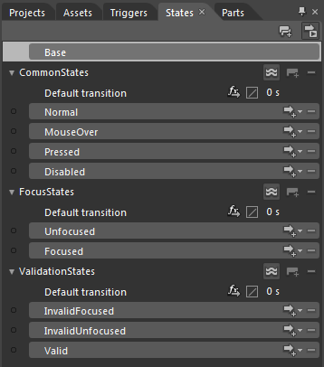Selecting the "Normal" state we could create the default template we are going to use for our button. In this case, a red ellipse is drawn.
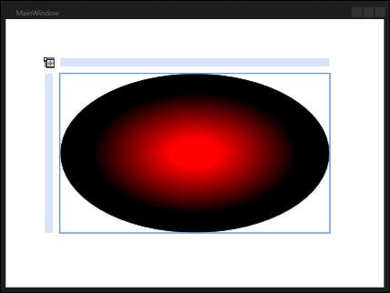Now we want that when the button is in the "MouseOver" state, the color of our ellipse changes to Blue. So we select the "MouseOver" state, and as the recoding button is active (exactly the same as when we were creating an animation) we can change the value of the elipse to blue, so Blend detects the change and creates a new storyboard for the "MouseOver" state. In this case, Blend assigns the "MouseOver" name to the storyboard, because it's going to be executed only when the button enters in that state.
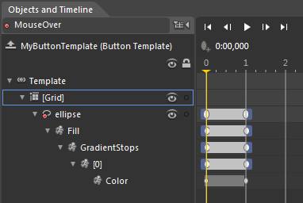The VisualStates provides a very easy a powerful way to create animations. Beside the Storyboard that is played for every state, a dynamic animation is created to make a smooth transition between the property values set in every state. The duration of this dynamic animation and the curve that is applied to make the transitions can be controlled using the "Default transition" icon present in every group of VisualStates. For example, if we want a transition time of 0.5s using a Bounce animation curve, we could enter the following values.
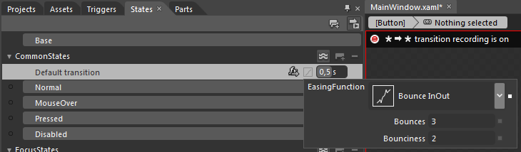And even the transition values between specific states could be introduced. This allows even more control on the animations. For example, we could specify a different duration and effect for the transition from "Normal" to "MouseOver"
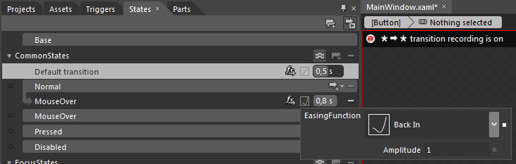